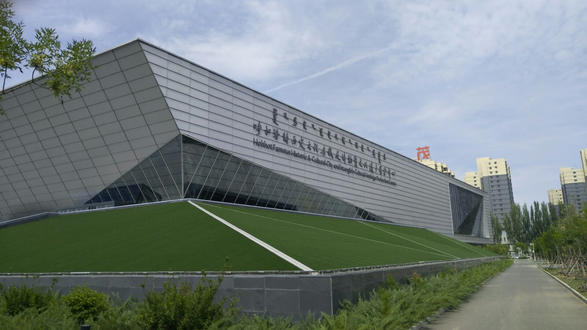

Internetware 2022
Hohhot, China, June 11-12, 2022
Welcome to Internetware 2022!
Internetware 2022, the 13th Asia-Pacific Symposium on Internetware, provides a forum for researchers and practitioners to discuss the trending software technologies in the Internet era.
Internet provides an open global infrastructure for exchanging and sharing resources for people all over the world. The rapid development and the wide application of Internet make it become a new mainstream platform for software to be used, developed, deployed, and executed. With the vision of “Internet as a Computer”, many application styles such as pervasive computing, grid computing, service computing, and cloud computing emerged in this open and dynamic environment.
To support new forms of applications and accommodate the fundamental changes of the underlying supporting platform, software technologies such as service-oriented architecture are proposed for current practices. However, these popular technologies are far from systematic and complete because no uniform software methodology and technology system like the object-oriented one is provided.
Software in the Internet era should autonomously, cooperatively, situationally, emergently, and trustworthily adapt to the new environment. The software entities dispersed on distributed nodes over the Internet, which evolved from objects in object-oriented methodology to software components (component-based software development), now are further turned into self-contained, autonomous and adaptive software services in service-oriented computing of state-of-arts. These software entities are coordinated statically and dynamically in various interaction styles (passively and actively) such as integration, cooperation, and orchestration to achieve flexible design objectives. So a so-called “software-web” instead of information-web is weaved. This software-web as a whole can perceive the changes of open, dynamic, and uncertain environments and respond to them in the way of transforming architectures. Furthermore, the flexible design objective of the software-web is reflected by its exhibiting several compatible goal-directed behaviors according to its up-to-date knowledge about the outside environment.
Therefore, a portmanteau term “Internetware” is used to denote the future software-web in open and dynamic environment, which can be defined as follows: an Internetware system is a software system consists of the self-contained, autonomous entities situated in the distributed nodes of Internet and the coordinators connecting these entities statically and dynamically in various kinds of interaction styles (passively and actively). As a whole, an Internetware system is able to perceive the changes of open and dynamic environment such as Internet, respond to the changes in the way of architectural transformation, and exhibit context-aware, adaptive and trustworthy behaviors in the open and dynamic environment in order to meet its flexible design objectives. Internetware challenges many aspects of software technologies, from operating platforms, programming models, to engineering approaches, etc.
Keynotes
TBD
Program
TBD
Call for Papers
Internet is open, dynamic, and meets a constantly changing environment. Software, being architected like the Internet, developed with the Internet, operated on the Internet, connects the human, cyber, and physical world. Internetware ought to be autonomous, cooperative, situational, evolvable, emergent, and trustworthy, but these requirements pose unique challenges for software technologies to support Internetware's construction, deployment, and use.
This symposium aims to provide an interactive forum where researchers and professionals from multiple disciplines and domains meet and exchange ideas to explore and address the challenges brought by Internetware.
Internetware 2022 will be held June 11-12 in Hohhot, China. We solicit submissions describing original and unpublished results of theoretical, empirical, conceptual, and experimental software engineering research related to Internetware. Topics of interests include but are not limited to:
- Novel software paradigm for Internetware
- Modeling and implementation of Internetware
- Requirements engineering for Internetware
- Software analysis, verification and testing
- Mining software repositories
- Software dependability, trustworthiness and confidence
- Software architecture and design
- Crowd-based methods, techniques and tools for Internetware
- Social-technical models and techniques
- Software ecosystem practices and experiences
- Software models and techniques for Internet-based systems such as Cloud Computing, Service Computing, Social commputing, Mobile Internet, Internet of Things, and Cyber-Physical Systems
- Software engineering for/with Big data
- Software engineering for/with Artificial Intelligence
Main Conference
Following types of papers are welcomed to Internetware 2022:
- Technical research papers for solid technical contributions to Internetware. Technical research papers must not exceed 10 pages for all text, figures, tables, and references.
- Short papers for early announcements on breaking research results. Short papers must not exceed 6 pages for all text, figures, tables, and references.
Best papers submitted to the technical research track will be selected and invited to submit an extended version to the Journal of Computer Science and Technology. All extended submissions will be evaluated following the guidelines of the corresponding journal. Only those satisfying all the criteria will be accepted for the journal publication.
Special Tracks
Best papers submitted to a special track will be first accept to Internetware 2022 proceedings, and then be invited to submit an extended version to the corresponding journals. All extended submissions will be evaluated following the guidelines of the corresponding journal. Only those satisfying all the criteria will be accepted for the journal publication.
Special Track-Intelligent Software EngineeringSubmission
All papers (main conference or special track) must be submitted electronically through EasyChair. Please specify the track of your submission. All submissions must be in English and in PDF format. Submissions that do not comply with the above instructions will be desk rejected without review. Please use the ACM Master article template, as can be obtained from the ACM Proceedings Template pages.
Important dates:
- Submission Deadline: February 20, 2022
- Notification of Acceptance: April 17, 2022
- Camera-Ready Version: April 30, 2022
Important Dates
- Submission Deadline: February 20, 2022
- Notification of Acceptance: April 17, 2022
- Camera-Ready Version: April 30, 2022
Steering Committee
Co-Chairs
- Hong Mei, Peking University, China
- Jian Lyu, Nanjing University, China
Members
- Zhi Jin, Peking University, China
- Tao Huang, Chinese Academy of Sciences, China
- Daoxu Chen, Nanjing University, China
- Jianmin Wang, Tsinghua University, China
- Xuandong Li, Nanjing University, China
General Co-Chairs
- Zhi Jin, Peking University, China
- Xuandong Li, Nanjing University, China
- Guanglai Gao, Inner Mongolia University, China
Program Committee
Co-Chairs
- Jun Pang, University of Luxembourg, Luxembourg
- Lei Bu, Nanjing University, China
- Ge Li, Peking University, China
Members
- Chunyang Chen, Monash University, Australia
- Liqian Chen, National University of Defense Technology, China
- Taolue Chen, University of London, UK
- Yuting Chen, Shanghai Jiao Tong University, China
- Zhenbang Chen, National University of Defense Technology, China
- Yang Feng, Nanjing University, China
- Cuiyun Gao, Nanyang Technological University, Singapore
- Fuyuki Ishikawa, National Institute of Informatics, Japan
- He Jiang, Dalian University of Technology, China
- Lingxiao Jiang, Singapore Management University, Singapore
- Yanyan Jiang, Nanjing University, China
- Yu Jiang, Tsinghua University, China
- Hui Liu, Beijing Institute of Technology, China
- Yang Liu, Nanyang Technological University, Singapore
- David Lo, Singapore Management University, Singapore
- Lei Ma, University of Alberta, Canada
- Hausi A. Muller, University of Victoria, Canada
- Yu Pei, HK Polytechnic University, China
- Xin Peng, Fudan University, China
- Jun Sun, Singapore Management University, Singapore
- Kenji Tei, Waseda University, Japan
- Jingyi Wang, Zhejiang University, China
- Anton Wijs, Eindhoven University of Technology, Netherands
- Xin Xia, Huawei, China
- Tao Xie, Peking University, China
- Xiaofei Xie, Nanyang Technological University, Singapore
- Jifeng Xuan, Wuhan University, China
- Jie Zhang, University College London, UK
- Chenyi Zhang, Jinan University, China
- Yuxia Zhang, Beijing Institute of Technology, China
- Haiyan Zhao, Peking University, China
- Junfeng Zhao, Inner Mongolia University, China
- Minghui Zhou, Peking University, China
- Zhiqiang Zuo, Nanjing University, China
Local Arrangement Co-Chairs
- Jiantao Zhou, Inner Mongolia University, China
- Junfeng Zhao, Inner Mongolia University, China
Web Chair
- Yongqiang Gao, Inner Mongolia University, China
Financial Chair
- Yongqiang Gao, Inner Mongolia University, China
Proceedings Chair
- Yang Feng, Nanjing University, China
Publicity and Social Media Chair
- Yanyan Jiang, Nanjing University, China
- Shaopeng Wang, Inner Mongolia University, China
Conference Venue Information

The conference venue will be The Inner Mongolia Xincheng Hotel. Xincheng Hotel, situated in the center of Hohhot, the capital city of Inner Mongolia Autonomous Region, covers an area of 121,000 square meters. Here you can find a peaceful and beautiful environment and gardens carefully planted in the midst of modern buildings. On this wonderful and rich field, it is equipped with modern facilities such as lodging, food and beverage, entertainment, SPA, exhibition and club as well as other devices. In addition, there are more than 600 beds, over 20 meeting rooms, 45 restaurants, bars and banquet halls, an 18-lane bowling alley, video games and other kinds of entertainment and recreation facilities, which create a wonderful and pleasant place for people. Xincheng Hotel has also been equipped with an intranet and internet system, enabling many business transactions to be conveniently conducted online, such as reservations, receptions, reception, registration, enquiries, monitoring, fire control, checking in and checking out, which will assist out guests in utilizing fast, safe, and high-quality service.
Address: 40. Hulun S. Rd. Hohhot, Inner Mongolia, China
Tel: +86-471-6660888
Fax: +86-471-6931141
Accommodation
TBD
Travel Information and Food
The Hohhot City
- Inner Mongolia exhibition hall
- Dazhao Wuliang Temple
- Qingcheng Park

Hohhot Gourmet
- Roasted Whole Lamb
- Boiled sheep on ice
- Barbecue
Special Section/Issue on Intelligent Software Engineering
Software systems have been playing important roles in business, scientific research, and our everyday lives. It is critical to improve both software productivity and quality, which are major challenges to software engineering researchers and practitioners. As developers work on a project, they leave behind many digital artifacts. These digital trails can provide insights into how software is developed and provide a rich source of information to help improve development practices. For instance, GitHub hosts more than 57M repositories, and is currently used by more than 20M developers. As another example, Stack Overflow has more than 3.9M registered users, 8.8M questions, and 41M comments. The productivity of software developers and testers can be improved using information from these repositories.
In recent years, software engineering is benefiting from the rise of Artificial Intelligence (AI) techniques (e.g., machine learning and deep learning). These techniques have shown a great success in addressing various software engineering problems (e.g., code generation, code recommendation, and bug fix and repair). Many papers have applied AI techniques to discover knowledge or build intelligent tools from software artifacts (e.g., specifications, source code, documentations, execution logs, code commits and bug reports) to improve software quality and development process. Mining high quality knowledge from software artifacts is critical to building AI tools. Thus, mining software repositories to learn predictive and quality models is an important part in intelligent software engineering. For this special issue, we seek the full potential of AI on improving both software productivity and quality.
We invite the submission of high-quality papers describing original and significant work in all areas of intelligent software engineering including (but not limited to): 1) Methodological and technical foundations of intelligent software engineering, 2) Approaches and techniques for knowledge discovery in various software artefacts, and 3) Applications of AI techniques to facilitate specialized tasks in software engineering. Topics of interest include but are not limited to:
A. Intelligent software engineering techniques- AI models and techniques for software engineering
- Robust and highly scalable algorithms for mining ultra-large-scale software systems
- Explainable and actionable AI models
- Visualizing AI models
B. Knowledge discovery in software artefacts
- Mining software specifications
- Mining source code/code commits
- Mining execution traces and logs
- Mining bug and crash reports
- Mining Q&A and social data
C. Intelligent software engineering in specialized tasks
- AI techniques for software development and reuse
- AI techniques for software maintenance and evolution
- AI techniques for software testing and debugging
- AI techniques for open-source ecosystem best practices
- AI techniques for better requirement reasoning and refinement
- AI techniques for program repair
Submission
To speed up the review process, and to encourage people to join Internetware 2022 (https://internetware2022.github.io/) conference (in Hohhot, China), we setup two rounds of reviews: a Internetware conference round, and a journal round.
In the Internetware conference round, authors are encouraged to submit their manuscripts to the Easychair submission site https://easychair.org/my/conference?conf=internetware2022, You should choose “Intelligent Software Engineering Track” in Easychair. The submissions must have not been previously published or considered for publication elsewhere. Each submission must not exceed 10 pages for all text, figures, tables, and references. All submissions must be in English and in PDF format. Please use the ACM Master article template, as can be obtained from the ACM Proceedings Template pages. Each submission will receive at least three high-quality reviews from our PCs. Each accepted submission must be accompanied by a registration of at least one author and presented at Internetware 2022.
And in the journal round, only the selected best papers will be invited to submit their revisions to the Automated Software Engineering journal. You should choose SI:TBD. The authors should carefully address the comments from the Internetware conference reviewers and prepare a response letter. And these papers will be reviewed by the same three reviewers. Note that only the selected best papers from the Internetware conference round will get invited for possible journal publication.
Important Dates
Internetware conference round- Submission Deadline: February 20, 2022
- Notification of Acceptance: April 17, 2022
Journal round
- Submission Deadline: June 30, 2022
- First Round Review Due: September 30, 2022
- Revision Due: December 31, 2022
- Final Decisions: March 31, 2023
Guest Editors
- Xing Hu, Zhejiang University, China (xinghu@zju.edu.cn)
- Xin Xia, Huawei, China (xin.xia@acm.org)
- David Lo, Singapore Management University, Singapore (davidlo@smu.edu.sg )
- Ge Li, Peking University, China (lige@pku.edu.cn)